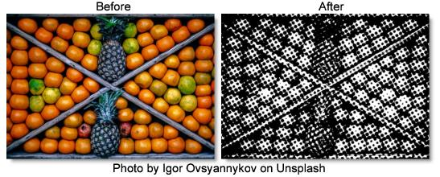

S_HalfTone
Description
Generates a halftone version of the image using a black and white pattern of dots.
The S_HalfTone filter comes from the Emmy award winning Boris FX Sapphire filter set.
Category
Stylize.
Controls
Presets
To select a preset, pick one from the Presets window.
Dots
Selects the dots' color model.
Black
Dark dots are used on a bright background.
White
Bright dots are used on a dark background.
Dots Frequency
The frequency of the dots pattern. Increase for finer dots, decrease for larger dots.
Dots Angle
The angle of the overall dots pattern in counterclockwise degrees.
Dots Rel Width
The relative width of the dots. Increase for wider dots, decrease for taller ones.
Dots Sharpness
Scales the sharpness of the edges of the dots.
Dots Lighten
Increase to lighten the resulting dot pattern.
Smooth Source
If positive, the source is blurred by this amount before the halftone is applied. This can be used to remove some detail in the dots and make them more consistently round.
Color1
The bright color to use for the dots pattern.
Color0
The dark color to use for the dots pattern.
Dots Shift X & Y
The horizontal and vertical translation of the dots pattern.